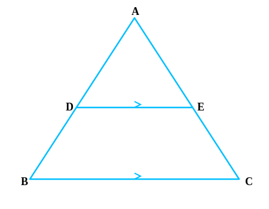
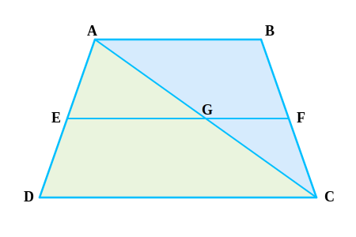

Example 1

If a line intersects sides AB and AC of a ∆ABC at D and E respectively and is parallel to BC,
prove that ADAB = AEAC.
DE || BC.
ADAB = AEAC
Since DE || BC, by BPT:
ADDB = AEEC
Inverting the relation:
DBAD = ECAE
Adding 1 to both sides:
DBAD + 1 = ECAE + 1
DB + ADAD = EC +
AEAE
ABAD = ACAE
Inverting again:
ADAB = AEAC
Hence Proved.
Example 2

ABCD is a trapezium with AB || DC. E and F are points on non-parallel sides AD and BC
respectively such that EF is parallel to AB. Show that AEED = BFFC.
AB || DC and EF || AB.
AEED = BFFC
Join AC to intersect EF at G.
In ∆ADC, EG || DC (Since EF || AB || DC).
By BPT: AEED = AGGC ...(1)
In ∆CAB, GF || AB.
By BPT: AGGC = BFFC ...(2)
From (1) and (2):
AEED = BFFC
Hence Proved.
Example 3

In Fig., PSSQ = PTTR and ∠PST = ∠PRQ. Prove that PQR is an isosceles triangle.
PSSQ = PTTR and ∠PST = ∠PRQ.
∆PQR is isosceles.
Since PSSQ = PTTR, by Converse of BPT: ST || QR.
Therefore, ∠PST = ∠PQR (Corresponding Angles).
But given ∠PST = ∠PRQ.
So, ∠PQR = ∠PRQ.
Sides opposite to equal angles are equal, so PQ = PR.
Since two sides are equal, ∆PQR is isosceles.
Hence Proved.
Example 4

In Fig., if PQ || RS, prove that ∆POQ ~ ∆SOR.
PQ || RS.
∆POQ ~ ∆SOR.
In ∆POQ and ∆SOR:
1. ∠P = ∠S (Alternate Interior Angles as PQ || RS)
2. ∠Q = ∠R (Alternate Interior Angles as PQ || RS)
3. ∠POQ = ∠SOR (Vertically Opposite Angles)
By AAA Similarity Criterion (AAA Similarity):
∆POQ ~ ∆SOR
Hence Proved.
Example 5

Observe Fig. and then find ∠P.
∆ABC with A=80°, B=60°. AB=3.8, BC=6, AC=3√3.
∆RPQ with R=?, P=?, Q=?. PR=6√3, PQ=12, RQ=7.6.
Value of ∠P.
Compare ratios of sides:
ABRQ = 3.87.6 = 12
BCQP = 612 = 12
CAPR = 3√36√3 = 12
Since sides are proportional, ∆ABC ~ ∆RQP (SSS Similarity).
Therefore, corresponding angles are equal: ∠C = ∠P.
In ∆ABC, ∠C = 180° - (∠A + ∠B) = 180° - (80° + 60°) = 180° - 140° = 40°.
So, ∠P = 40°.
∠P = 40°.
Example 6

In Fig., OA . OB = OC . OD. Show that ∠A = ∠C and ∠B = ∠D.
OA . OB = OC . OD
∠A = ∠C and ∠B = ∠D.
Rearranging the given equation:
OAOC = ODOB
In ∆AOD and ∆COB:
∠AOD = ∠COB (Vertically Opposite Angles)
Sides containing these angles are proportional (from above).
By SAS Similarity Criterion (SAS Similarity):
∆AOD ~ ∆COB
Corresponding angles are equal:
∠A = ∠C and ∠D = ∠B.
Hence Proved.
Example 7

A girl of height 90 cm is walking away from the base of a lamp-post at a speed of 1.2 m/s. If
the lamp is 3.6 m above the ground, find the length of her shadow after 4 seconds.
Height of girl (CD) = 90 cm = 0.9 m.
Height of lamp (AB) = 3.6 m.
Speed = 1.2 m/s. Time = 4 s.
Length of her shadow (DE = x).
Distance covered (BD) = Speed × Time = 1.2 × 4 = 4.8 m.
In ∆ABE and ∆CDE:
∠B = ∠D = 90° (Vertical poles).
∠E is common.
So ∆ABE ~ ∆CDE (AA Similarity).
Therefore, BEDE = ABCD
4.8 + xx = 3.60.9 = 4
4.8 + x = 4x
3x = 4.8
x = 1.6 m.
Length of her shadow is 1.6 m.
Example 8

CM and RN are respectively the medians of ∆ABC and ∆PQR. If ∆ABC ~ ∆PQR, prove that:
(i) ∆AMC ~ ∆PNR
(ii) CM/RN = AB/PQ
(iii) ∆CMB ~ ∆RNQ
∆ABC ~ ∆PQR. CM and RN are medians.
(i) ∆AMC ~ ∆PNR, (ii) CMRN = ABPQ, (iii) ∆CMB ~ ∆RNQ.
Since ∆ABC ~ ∆PQR:
ABPQ = BCQR = ACPR and ∠A = ∠P, ∠B = ∠Q, ∠C = ∠R.
Since M and N are midpoints: 2AM = AB and 2PN = PQ.
So 2AM2PN = ACPR ⇒ AMPN = ACPR.
In ∆AMC and ∆PNR:
AMPN = ACPR
∠A = ∠P (Given)
So ∆AMC ~ ∆PNR (SAS Similarity).
Hence CMRN = ACPR = ABPQ.
Similarly, for (iii), we can prove ∆CMB ~ ∆RNQ using SAS (BM/QN = BC/QR and ∠B=∠Q).
Hence Proved.